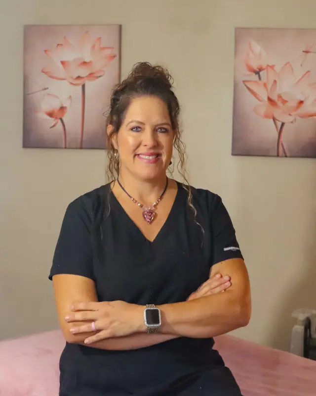

Professional training and deeply personal experience — walking beside every client with hope, support, education and direction.

Owner & Founder
Tara Safran
B.C.D.F.M., A.I.M.O.S., C.H.H.P., N.C.B.T.M.B.
With more than 30 years of hands-on experience, Tara has built A Touch Above around one belief: the body has a remarkable ability to heal when it's truly supported. A near-death experience at 19 set her on this path, and as a 10-year breast cancer survivor she understands firsthand the challenges patients and families face throughout a cancer diagnosis.
Her care is faith-based, and she specializes in functional medicine, terrain-based health, metabolic wellness and integrative oncology support. Tara is a wife, a mother of three and a grandmother.
Kim brings 16+ years of healthcare experience, including critical access hospitals and Level I trauma centers. Her journey into integrative health became deeply personal after the heartbreaking loss of her 5-year-old son to leukemia — an experience that shaped her passion for supporting the whole person throughout their health journey.
Kim is the founder of MTM Wellness and has advanced training through the Metabolic Terrain Institute of Health. She blends evidence-based and functional medicine with a root-cause approach, helping clients connect conventional medical care with nutrition, lifestyle, metabolic health and whole-person wellness. She is a proud mother of four.
Jacey provides personalized treatments for chronic pain and stress relief. With advanced training in PEMF-guided pain relief, she pairs skilled hands with Electron Plus technology to help clients move, rest and feel better.
PEMF Guided Pain ReliefTherapeutic Medical MassageLymphatic MassageChair MassageSwedish Massage
Relief you can feel
0Years of hands-on healing
0Years of nurse practitioner care
0Session types & therapies
0Specialty certifications
Why We Do This
Hope, healing & wholeness
Our Mission
To bring hope, healing and wholeness to every person we serve through compassionate, faith-centered care that honors the body's natural ability to heal.
Our Vision
A place where physical, emotional and spiritual health are cared for together — and every client becomes an empowered, active participant in their own healing.